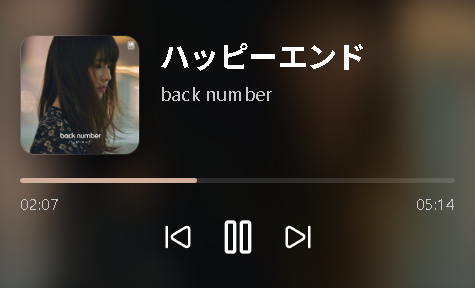
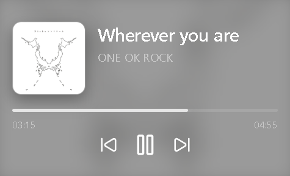
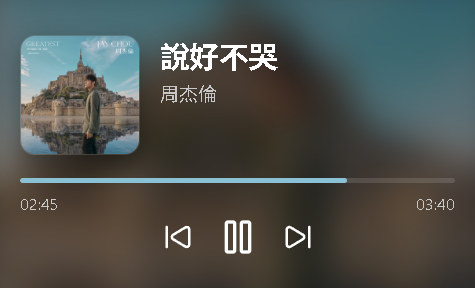
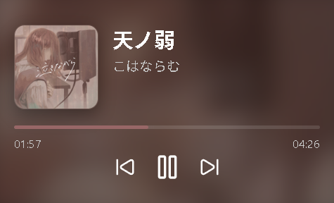
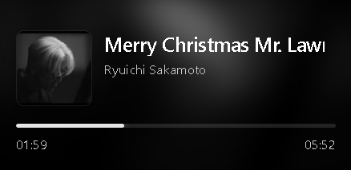
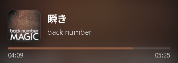

Track information
See the current track and artist from a supported Windows media session.
ImplementedWINDOWS DESKTOP PROJECT
A lightweight desktop music overlay for Windows. Keep track of what's playing and control playback without leaving what you're doing.

01 / FEATURES
MusicOverlay is being built around a simple idea: keep essential playback information accessible in a compact desktop window.
See the current track and artist from a supported Windows media session.
ImplementedA renderer-side playback clock keeps the progress display moving smoothly between media updates.
ImplementedControl the active media session with previous, play/pause, and next actions.
ImplementedOrganize available players and choose a preferred session, with Auto selection supported by the app architecture.
In development02 / ORIGINAL SCREENSHOTS
Seven original screenshots from the running MusicOverlay application. The gallery preserves each source image's aspect ratio and never enlarges it beyond its native size.
The medium-size player layout with album artwork, track details, playback progress and controls.

01 / PLAYER STYLE
Mellow tones / neutral theme
02 / PLAYER STYLE
Album art with warm tones

03 / PLAYER STYLE
Album-driven blue theme

04 / PLAYER STYLE
Japanese vocal track
A smaller player layout that keeps album artwork, track information and playback progress visible.

02 / SMALL MODE
Small player layout without playback controls
01 / SMALL MODE
A compact horizontal player layout
A slim layout for a quick glance at the track and progress.

05 / COMPACT MODE
A slim player with core track information
Original PNG files are used directly. Select an image to open the source-size file in a new tab.
03 / VIDEO DEMOS
Short recordings captured from the running application. Videos keep their source dimensions and aspect ratio; on smaller screens they may scale down to fit but will never be enlarged.
01 / PLAYER DEMO
A short recording of the compact MusicOverlay player. Native recording size: 438 × 212.
02 / SETTINGS DEMO
Explore the settings page and see how the overlay can be configured. Native recording size: 822 × 654.
04 / ENGINEERING
The renderer handles presentation while the Electron main process coordinates media access, IPC, and background work.
Explore the source repository ↗05 / ENGINEERING CHALLENGES
The project has involved state synchronization, smooth UI updates, and bridging a desktop interface to Windows media sessions.
Moved progress-time calculation into a renderer-side PlaybackClock based on performance.now() and animation frames to reduce visible stuttering.
Separated UI-facing APIs from main-process media management and worker communication, making responsibilities clearer.
Added a Rust Node-API controller prototype while retaining the existing SMTC monitoring path during incremental integration.
06 / STATUS & ROADMAP
MusicOverlay is an evolving personal project. The current focus is validating the architecture, polishing the experience, and preparing a reliable public build.
Current limitations
Behavior can depend on the Windows media session and supported player. Some native integration paths and edge cases still need end-to-end verification. Public downloadable builds are not available from this page yet.
BUILT WITH CURIOSITY
Browse the source to follow the implementation and project progress.
Windows download: a public release package will be linked here after packaging and release validation are complete.